Overview
In this tutorial we will go over the process of setting up breakable glass panels with 3ds Max. We will cover setting up material ID's for a variety of glass types, as well as the required steps for setting up your scene in order to successfully export your asset for CRYENGINE and get the desired result. The breakability of the asset all depends on the surface types we assign in CRYENGINE.
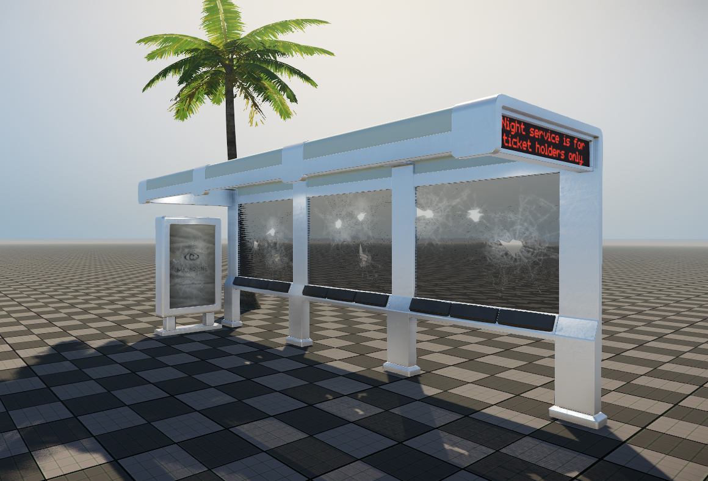
Pic1: In-game shot of the broken glass panes achieved using the Breakable Glass technology
This is covering the Breakable Glass Shader which is used to create dynamic and physically accurate fracturing for glass objects, while keeping the performance cost low.
Prerequisites for this Tutorial
Before you continue with this tutorial, make sure to have read and understood the following;
- Installing the 3ds Max Tools
- Basic Asset Setup and Export - 3ds Max
- CRYENGINE Exporter in 3ds Max
- Measurement Reference - (DCC Unit Setup)
Helpful Information
In order to avoid any issues there are a few limitations that need to be considered:
- Breakable glass panels need thickness, not just in the form of two polygons facing opposite sides but actual geometry for the thickness. This is also the way to control how thick/thin your glass panel is. Please create your glass panels using simple boxes.
- Glass curvature is not supported so keep your panels flat. Set those as unbreakable, or modify your model to not include curved breakable glass.
- The Shader handles all the fracturing so there is no need to tessellate your geometry. In fact it is recommended to keep it as simple as possible.
- CRYENGINE supports 4 different breakable glass surface types that can be used. Just assign a unique surface type to each of your glass material ID's, if you want to your model to contain different glass types. We will come back to this in the CRYENGINE part of the tutorial.
- Do not assign the glass material ID's to any other part of your asset that is not supposed to be breakable glass.
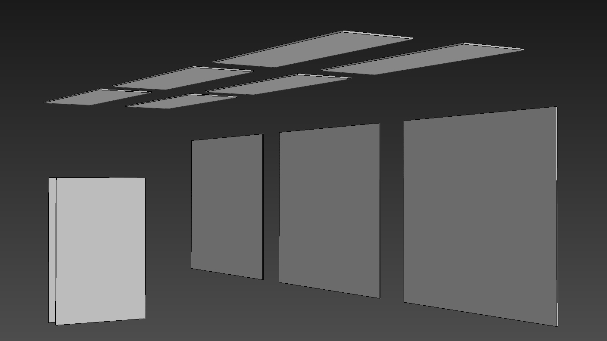
Pic2: Wireframe of the glass panels inside 3ds Max
Initial 3ds Max Setup
As with any asset that's meant to be exported for CRYENGINE we first need to create a new folder within the engine's folder structure. This is where you will save any files related to your asset.
<Project Folder>\Assets\Objects\tutorials\breakable_glass\Bus_stop
Since this is not a modeling tutorial we will be using an already created bus stop model as it incorporates a few different uses for the breakable glass shader. So to start with save your *.max file in the new folder you just created.
Material
Assuming you have a basic understanding of how the 3ds Max material editor works we will now set up the material for our asset. Start of by creating a new Multi/Sub-Object material with 8 sub-materials and name them accordingly. In this example we will call it bus_stop.
For this asset, we have 8 SubIDs detailing the different parts of the asset.
- 1 x proxy ID (for the main structures collision geometry)
- 1 x metal ID (for the main structure)
- 3 x different glass IDs (because we want some variation: "ribbed" top & back breakable glass panels, curved un-breakable panels, clear glass advertisement panels)
- 1 x seat padding (a plastic material)
- 2 x scrolling textures (advertisement ID's: scrolling text, scrolling advertisements)
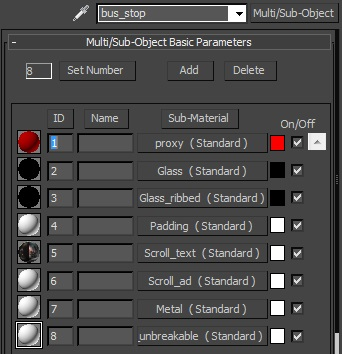
Pic3: The full material setup for the bus stop asset with 8 SubIDs
ID1: Proxy ID setup (main physics geometry)
It's good practice to have your first material ID as the physics proxy material (this is used for hit detection, physics and so on). Also it's worth mentioning that our glass panels do not require a physics proxy to work, (as we will be physicalizing the visible mesh) but we will go over that later.
Now there are a few settings that need to be changed to set this up properly for CRYENGINE:
For the proxy SubID... (this is for the metal structure of the bus stop):
- Under Basic Shader Parameters select Crytek Shader from the drop-down menu. (This is a standard setting for any material meant to be used in CRYENGINE)
- Tick the Physicalize option.
- From the second drop-down menu select Physical Proxy (NoDraw)
- For this material you can also change the diffuse color to bright red and bring the opacity down to 50 so it's easier to visualize your proxy mesh.
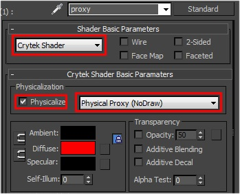
Pic4: Proxy ID Setup in 3ds Max
ID2: Advertisement Breakable Glass ID Setup
For our second material ID we will create the first glass material and name it Glass. This is for the advertisement panels on the side of the bus stop model. These will be clear glass examples. This is set up in a similar way to the proxy material (enabling physics) with the exception being that we select Default on the second drop-down menu.
For the glass SubID:
- Under Basic Shader Parameters select Crytek Shader from the drop-down menu.
- Tick the Physicalize option.
- From the second drop-down menu select Default
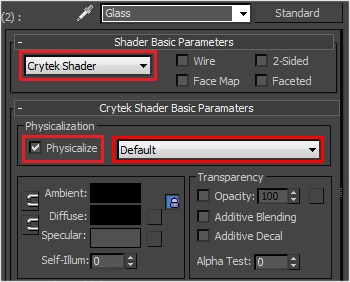
Pic5: 1st Breakable Glass ID (advertisements) Setup in 3ds Max
ID3: Main Breakable Glass Setup
For this particular asset we want to have another Glass material for our main glass panels, and we will be using a set of textures to create the effect. We will create this for our third material ID and call it Glass_Ribbed. The setup for it is identical to the Glass ID2, however you can load up your textures in it, although that can be done later on in the CRYENGINE editor as well.
For the main breakable glass SubID:
- Under Basic Shader Parameters select Crytek Shader from the drop-down menu.
- Tick the Physicalize option.
- From the second drop-down menu select Default
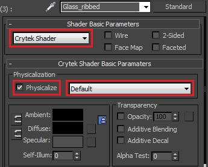
Pic6: 2nd breakable glass material ID (main panels) in 3ds Max
ID4,5,6,7: (Standard Setup)
The next set of SubID's are the basic setup for standard materials. These Should all have the Crytek Shader set and from the drop down list, select default. These IDs don't require any physicalization setup, since their collision setup will be handled by the main physics proxy: (SubID 1)
- ID4 - Seat Padding
- ID5 - Scroll test (bus timetable)
- ID6 - Scrolling advertisement billboard
- ID7 - Metal (the main structure of the bus-stop)
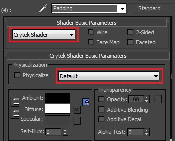
Pic7: Material setup for ID 4,5,6,7 (non-physicalized SubIDs)
ID8: Un-breakable Glass Setup
ID8 The final SubID for this assets material. This is for the curved glass that we want to sit on the top front of the bus stop. The setup is the same as ID 4,5,6,7 but requires a special mention as this will be glass, but un-breakable.
Export the Material
This is pretty straight forward:
- Make sure you have the correct material selected at its highest level in the material editor.
- In the CRYENGINE exporter click the Create Material button. Save this into the same folder where we will save our asset.
<YOUR_PROJECT_FOLDER\Assets\Objects\tutorials\breakable_glass\Bus_stop\bus_stop.mtl
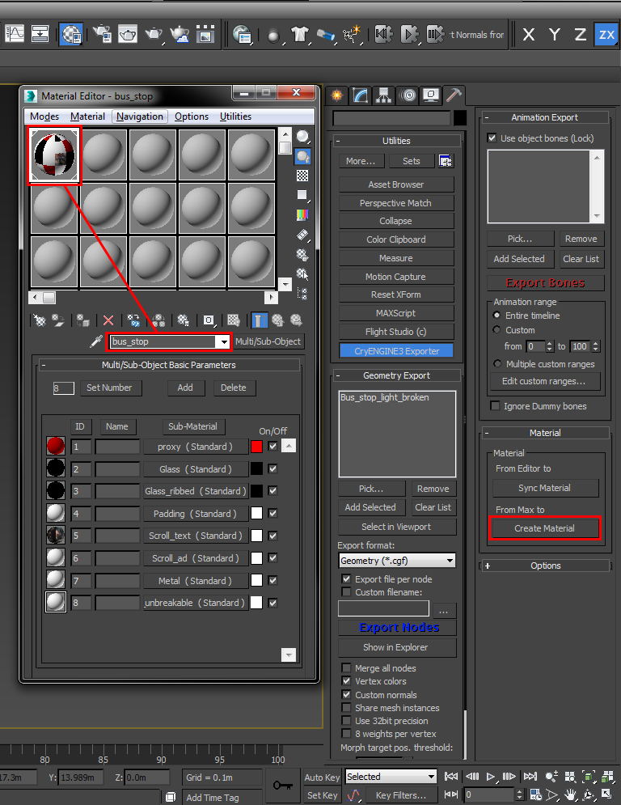
Pic8: Material selected at the top level, ready for export
Object Setup
Moving on to the geometry setup, there are a few particular things about the glass object that need to be mentioned:
- First of all each breakable glass panel needs to be a separate node in 3ds Max.
- As mentioned previously, these glass panels do not require a physical proxy, since the SubID is physicalized the engine will use the render mesh to generate the fractures.
- All of the Glass panels need to be linked to the export to the parent node (bus stop mesh) which is then linked to a helper dummy. Make sure to align their pivots to this node and also to Reset XForm in order to avoid any transform related issues.
- It is recommended that you have holes for your glass in the proxy mesh for your asset in order to get accurate hit detection. (you want to hit the glass, not the the frames proxy.
- As mentioned before, make sure each of your glass objects is a closed mesh and it doesn't contain any unnecessary geometry or tessellation. (A simple box)
Once we are sure our asset follows the rules mentioned above we can go ahead and name the panels in a logical way so it's easier to troubleshoot just in case something goes wrong.
Also make sure the bus_stop Multi/Sub-object material is applied to our geometry, the correct ID's are assigned to the glass panels and no other piece of geometry other than the panels is using any of the breakable glass material ID's.
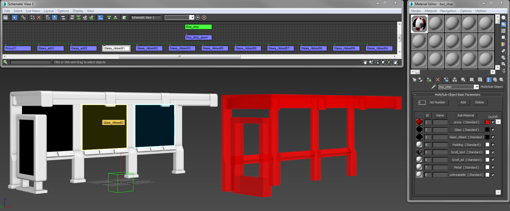
Pic9: Hierarchy setup
Note that the proxy is offset just for previewing purposes! Normally it should match the location of your render mesh.
Proxy Setup
For the main proxy mesh (metal bus stop) see above pic, we have separated the mesh into multiple nodes, rather than one big mesh. The reason behind this is the simpler the physics proxy is, the better it will perform (within the physics system). Note how it's made of multiple simple boxes.
All the proxies should be linked to the parent object (the visible mesh) which is then linked to the helper dummy. See the above picture for the schematic layout in 3ds Max.
LOD Setup
To follow the rules of asset creation for CRYENGINE, we have made an LOD for the bus stop. This is a simplified model of the original mesh (LOD 0).
Again the LOD should be linked to the parent object (the visible mesh) which is then linked to the helper dummy.
Export the Geometry
We are now ready to export our geometry to the engine. In the CRYENGINE exporter:
- Add the root node of the asset to the export list. In our case it is the dummy called "Bus_stop"
- Select Geometry (*.cgf) from the Export Format drop-down list
- Press the Export Nodes button
CRYENGINE Setup
We have now finished the setup for the 3ds Max portion of the tutorial. Below, we'll configure the materials for our breakable glass asset using the CRYENGINE material editor. This part of the tutorial will cover setting up the glass materials inside CRYENGINE so they actually function as intended. Although this is a simple process it is very important to go through it otherwise the breakable glass will not work.
There are two settings that we will need to change in order to get the glass materials working properly:
The first one is the shader that is responsible for the way the material is treated by the renderer, giving you access to the different parameters that control the look of glass surfaces within CRYENGINE.
After you opened up your scene select the Bus Stop material in the Material Editor and change the Shader to Glass for the Glass and Glass_Ribbed sub-ID’s.
For the Glass_unbreakable sub-ID we will set the Shader to Illum. The reason for that is we’re aiming to achieve the look of thick non transparent glass so the extra controls offered by the Glass shader don’t offer any benefit in this particular case.
Pic10: Screenshot of the individual Glass material sub-ID's inside CRYENGINE 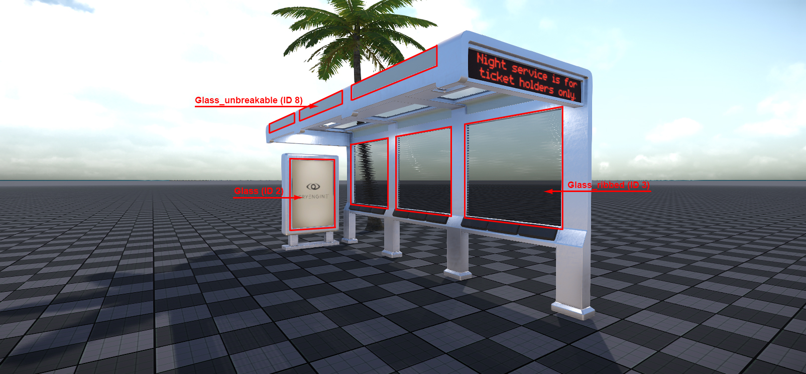
The second setting that needs to be changed is the Surface type. This will enable the glass to break as well as the application of adequate decals when bullets hit the surface and also the particles created by the impact.
As mentioned in the previous part of the tutorial it is required that we assign unique surface types to each of our glass sub-materials in order to get them to work together properly.
The glass surface types available in CRYENGINE are the following:
- Glass_breakable_safetyglass_large
- Glass_breakable_safetyglass_small
- Glass_breakable_thin_large
- Glass_breakable_thin_small
- Glass_unbreakable
The difference between _large and _small is in the amount of detail the glass fragments can have. The _small surface types have higher tessellation and higher detail in the chunks and it should be used in places where the player can get really close to the asset, while the _large ones are less expensive and should be used for more distant objects.
Safetyglass and Thin work in a similar way with the key difference being that Safetyglass keeps the textures applied to the material after breaking. This is important to achieve the desired result for our Glass_ribbed sub-material.
Glass_unbreakable is used in cases where it is not required or desired to break the glass but proper application of the impact decals and particles is still wanted.
Now we can continue setting up our materials with the correct surface types.
For the Glass sub-ID (ID 2) change the surface type to Glass_breakable_thin_small.
Now select the Glass_Ribbed (ID 3) and assign it the Glass_breakable_safetyglass_small and lastly for Glass_unbreakable (ID 8) change it to Glass_unbreakable. 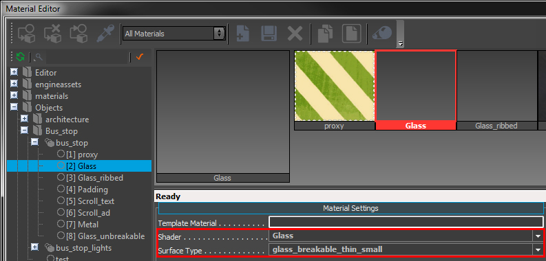
Pic11: Screenshot of the Glass material set up with the right shader and surface type
If you have properly set up your Shader and Surface Type you should now have fully breakable glass panels in your scene.